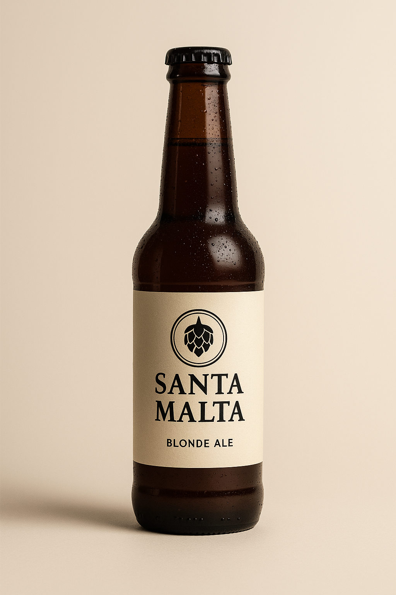

Cervecería Santa Malta
Artesanía, sabor y tradición en cada gota
Nuestras Cervezas
Rubia del Valle
– Lager suave y refrescante con notas florales.
IPA Sierra Fuerte
– Cerveza intensa y amarga con lúpulo local.
Malta Oscura
– Stout con toques de café y chocolate amargo.
Trigo de la Tierra
– Ale de trigo frutal y especiada, ideal para verano.
Edición Especial Miel
– Lager infusionada con miel artesanal de montaña.
